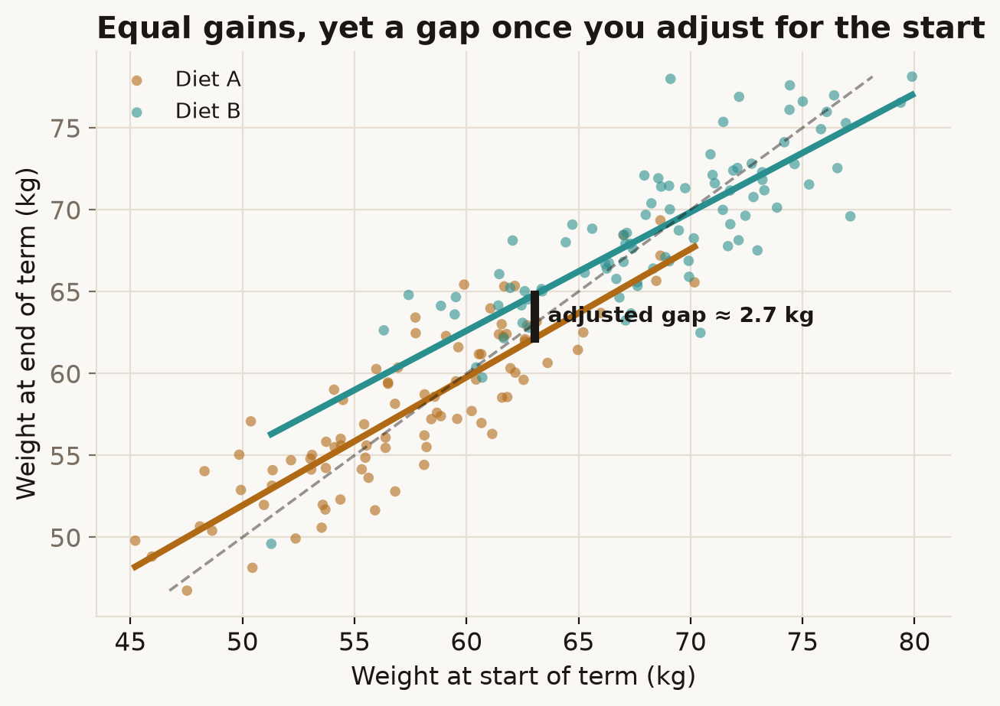

Give the same before-and-after data to two careful analysts and they can reach opposite conclusions about whether something had an effect — not from any mistake, but because they quietly asked different questions.
Try it
Students on two diets are weighed at the start and end of term. Did the diet matter? Drag from Compare the gain to Adjust for the start.
What's going on
The first analyst compares the average weight gained. Both diets gained about the same — near zero — so they see no difference. Their evidence is the no-change diagonal: each diet's cloud sits squarely on it.
The second analyst adjusts for starting weight: among students who began at the same weight, which diet ended heavier? Because heavier students tend to drift back toward the middle (the within-group line is flatter than the diagonal), and Diet B's students started heavier, at any fixed starting weight Diet B ends a couple of kilograms above Diet A. They see a clear effect.

Neither analyst miscalculated. They computed different things: "is the average change the same?" and "at equal baseline, is the outcome the same?" Those are different questions, and with observational groups they can have different answers. Which one is right depends on what you actually want to know and what you're willing to assume about why the groups differ — a causal judgement, not a statistical one.
In the real world
Frederic Lord posed this in 1967 with a university example: boys and girls weighed at the start and end of the year. One statistician found the sexes' average gains identical; another, adjusting for initial weight, found a difference. The puzzle launched decades of work on analysing change. The modern resolution (Holland & Rubin; Pearl) is that the change-score and ANCOVA estimates answer different causal questions, and the right choice follows from the causal diagram — for a randomised treatment, the baseline-adjusted estimate is usually the one you want.
How not to get fooled
Before analysing change, write down the question in causal terms: the effect of what, holding what fixed? "Difference in gains" and "difference at equal baseline" are not interchangeable. When groups weren't randomised, neither is automatically correct — state your assumptions, and notice that the method can decide the headline.
Sources
- F. M. Lord (1967), A paradox in the interpretation of group comparisons, Psychological Bulletin, 68(5): 304–305. doi
- P. W. Holland & D. B. Rubin (1983), On Lord's Paradox, in Principals of Modern Psychological Measurement.
- J. Pearl (2016), Lord's Paradox Revisited — (Oh Lord! Kumbaya!), Journal of Causal Inference, 4(2). doi